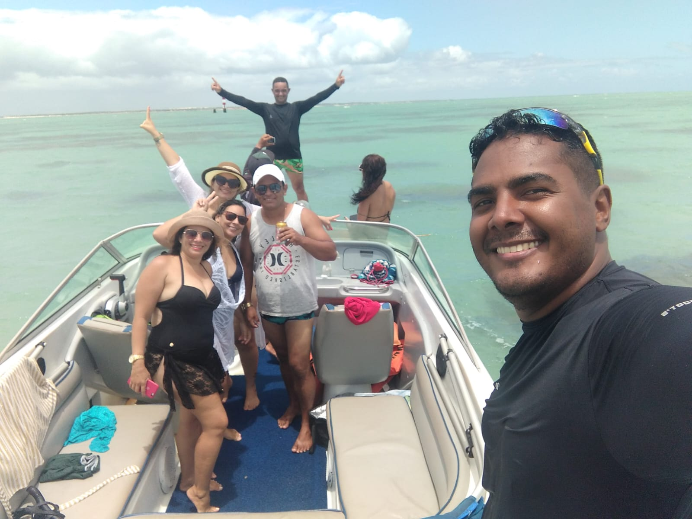
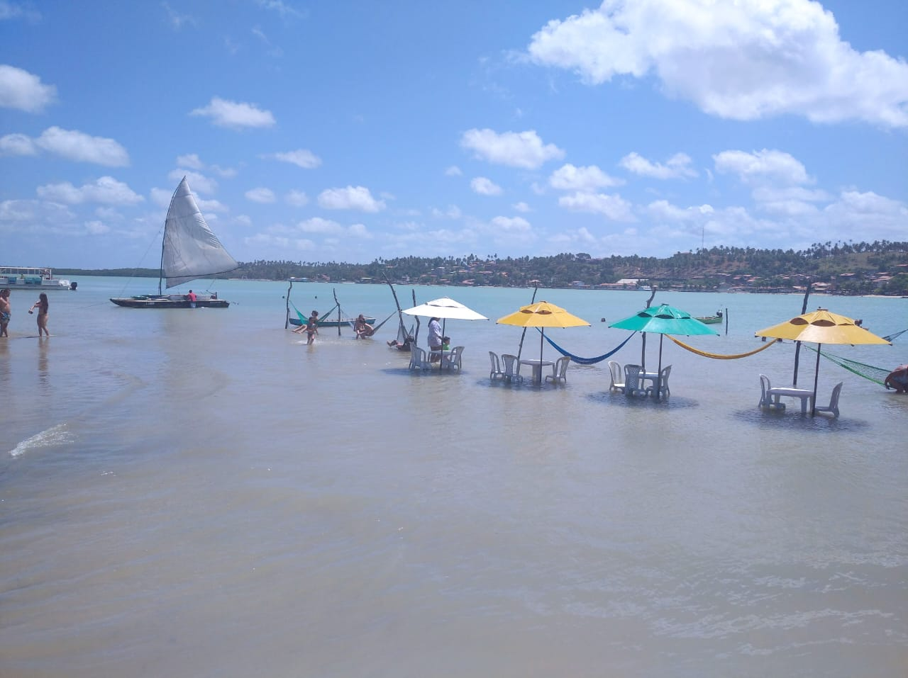

Sobre o passeio
Passeio a Rio do Fogo Com embarque diarios de acordo com a tábua de maré, o Passeio a Rio do Fogo fica localizado a 75 km da cidade do Natal no litoral norte em uma area de pescadores, restaurantes e quioque a beira mar o embarque e realizado atraves de lancha para os parrachos que e uma área de APA ( Área de Preservação Ambiental) para esse mergulho esta incluso mascara e snorkel com duração de 1h:30 lhe permintindo uma espriencia incriel em contato com a natureza
Entre dunas, rios e paisagens incríveis, cada parada é um convite para desacelerar e viver o melhor do litoral potiguar com leveza e exclusividade. ✨ Mais do que um passeio, é uma experiência completa de paz, aventura e contemplação. Viva esse paraíso com a Iturismo.
🌴 Roteiro do Passeio
- ✔ Saída de Natal no período da manhã, com embarque no hotel
- ✔ Trajeto panorâmico pelo litoral norte com paradas em mirantes para fotos
- ✔ Chegada à Praia de Rio do Fogo, com tempo para contemplação e banho de mar
- ✔ Possibilidade de passeio opcional de Quadriciclo pelas dunas de punau (não incluso)
- ✔ Deslocamento para Punaú, com visita ao encontro do rio com o mar
- ✔ Tempo livre para almoço (não incluso) em estrutura de apoio local
- ✔ Retorno para Natal no final da tarde
🚐 O que está incluso
- ✔ Transporte ida e volta
- ✔ Veículo climatizado (ar-condicionado)
- ✔ Motorista/guia experiente
- ✔ Paradas estratégicas para fotos
- ✔ Roteiro planejado para melhor aproveitamento do dia
Políticas
- ✔ Cancelamento gratuito com até 24h de antecedência
- ✔ Em caso de clima desfavorável, o passeio poderá ser remarcado
- ✔ Atividade classificada como turismo de aventura
- ✔ Horários podem sofrer alterações sem aviso prévio por questões operacionais
- ✔ O não comparecimento no horário marcado (no-show) implica perda do passeio
- ✔ Crianças devem estar acompanhadas por um responsável legal
- ✔ O roteiro pode ser ajustado conforme condições do dia (maré, vento, acessos)
- ✔ Recomendado o uso de protetor solar, roupas leves e óculos de sol
- ✔ Não inclui alimentação e bebidas, passeios opcionais e taxas (salvo quando informado)
- ✔ Pagamento antecipado pode ser necessário para confirmação da reserva
- ✔ Ao contratar o passeio, o cliente declara estar ciente e de acordo com as políticas
Galeria do passeio

